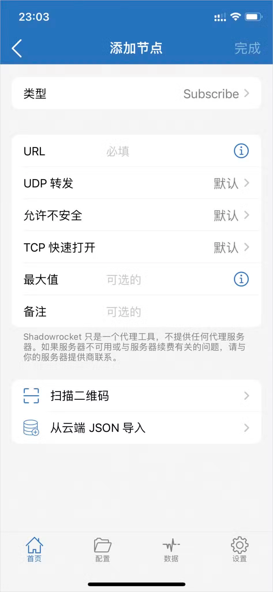
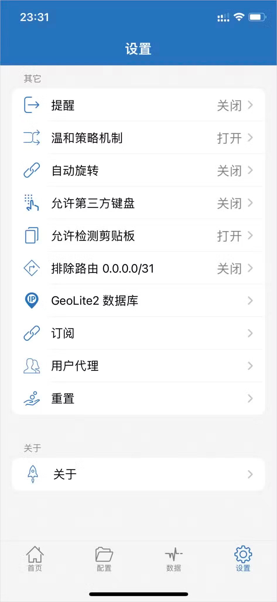
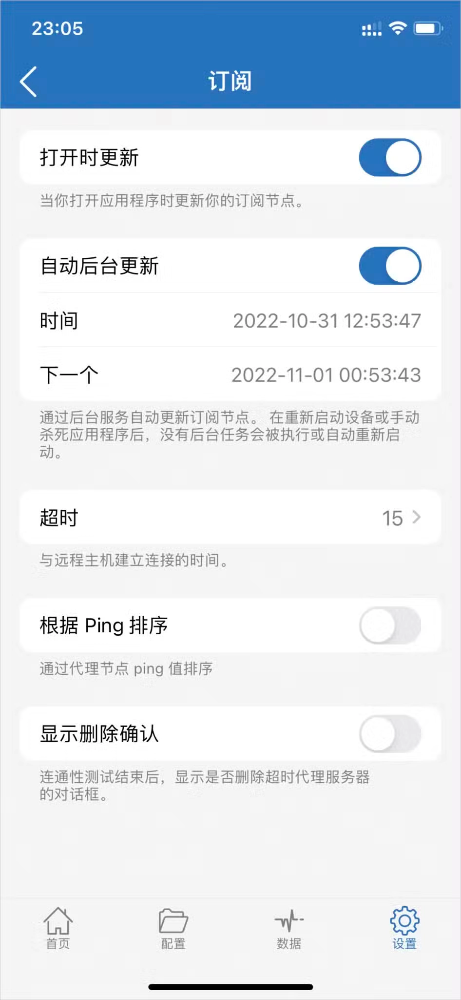
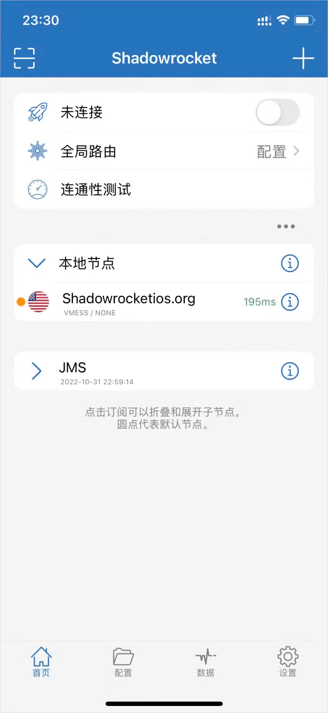
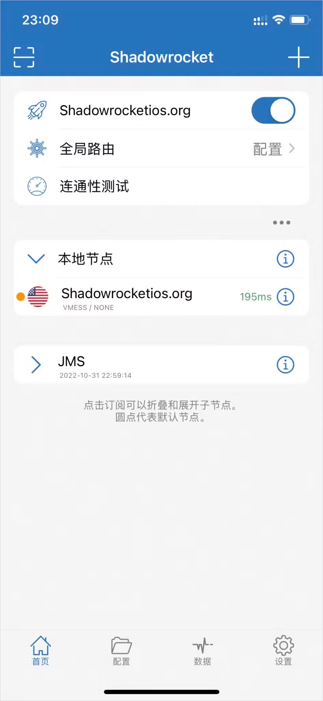
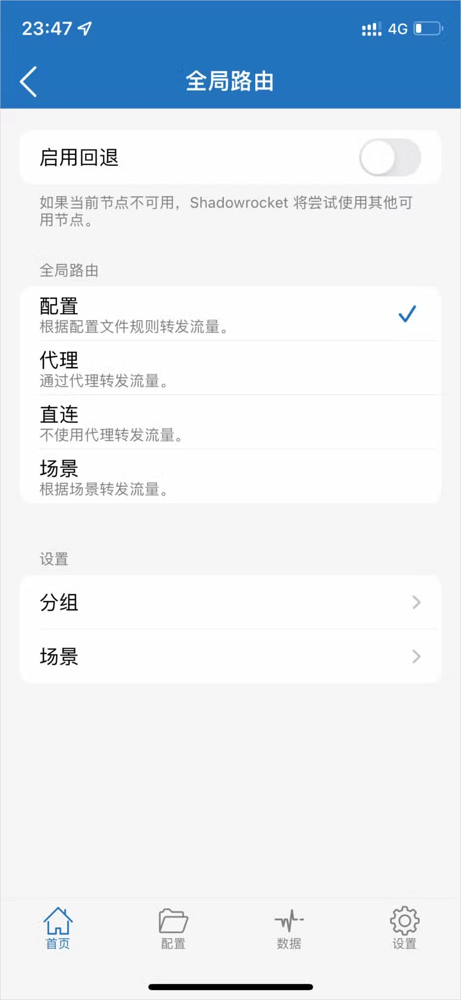

下载说明
Shadowrocket 是 iOS 上常见的代理客户端。中国区 App Store 通常无法直接下载，建议使用非国区 Apple ID，或先参考 iOS 主页面中的共享 ID 下载方式。
查看方式： 大屏设备下图片会以较小宽度展示，点击图片即可放大查看细节。
图文步骤
1
添加订阅节点
打开 Shadowrocket，点击右上角 +，类型选择 Subscribe，在 URL 中粘贴订阅地址，备注可填写节点来源名称，然后保存。

图 1：添加节点时选择 Subscribe，填写订阅 URL 后保存。
2
进入订阅设置
打开右下角“设置”，找到“订阅”选项，进入后可以配置订阅更新行为。

图 2：在设置页面进入“订阅”。

图 3：建议开启“打开时更新”，需要时再开启“自动后台更新”。
3
返回首页查看节点
订阅导入完成后，回到首页即可看到订阅分组和节点列表。先观察节点是否正常显示，再进行后续选择。

图 4：导入完成后，首页会显示订阅分组和可用节点。
4
选择节点并开启代理
先选中一个可用节点，再点击顶部开关启用代理。建议先做连通性测试，优先选择延迟较低的节点。

图 5：选中节点后，打开顶部开关即可启用代理。
5
设置全局路由
进入“全局路由”后，推荐新手选择“配置”，即按规则分流。这样国内流量通常直连，国外流量走代理，更适合日常使用。

图 6：全局路由推荐使用“配置”模式。
使用建议
新手建议： 优先使用订阅导入，不建议手动逐个添加节点。
路由建议： 日常使用优先选择“全局路由 → 配置”。
注意： 如果节点无法连接，优先尝试更新订阅、切换节点，或更换延迟更低的线路。